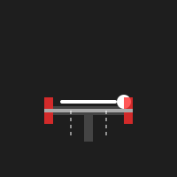
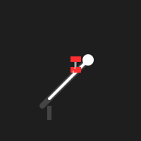
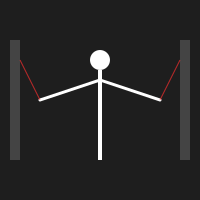

ตารางฝึก หน้าอก (Chest)
เน้นความหนาและความกว้างของกล้ามเนื้ออก

1. Barbell Bench Press
ท่าหลัก (Compound Movement) สำหรับสร้างมวลกล้ามเนื้ออกโดยรวม
วิธิฝึก (Instructions):
- นอนหงายบนม้านั่ง เท้าวางราบกับพื้นให้มั่นคง
- จับบาร์เบลให้กว้างกว่าหัวไหล่เล็กน้อย (Grip Width)
- ยกบาร์ออกจากแร็ค หายใจเข้าลึกๆ แล้วลดบาร์ลงมาช้าๆ จนแตะยอดอก
- ออกแรงดันบาร์ขึ้นพร้อมหายใจออก บีบอก (Squeeze) ที่จุดสูงสุด
Tips: อย่ากางศอกออกกว้างเกินไป ให้เก็บศอกทำมุมประมาณ 45
องศากับลำตัวเพื่อลดภาระหัวไหล่

2. Incline Dumbbell Press
เน้นกล้ามเนื้ออกส่วนบน (Upper Chest) ให้เต็มและสวยงาม
วิธิฝึก (Instructions):
- ปรับม้านั่งเอียงขึ้นประมาณ 30-45 องศา
- ถือดัมเบลล์ในมือทั้งสองข้าง นอนลงบนเบาะ
- ดันดัมเบลล์ขึ้นตรงๆ เหนืออก หายใจออก
- ค่อยๆ ลดดัมเบลล์ลงมาด้านข้างลำตัวจนรู้สึกตึงที่อก หายใจเข้า
Tips: โฟกัสที่การยืดอก (Stretch) ตอนลง และบีบ (Squeeze) ตอนขึ้น

3. Cable Fly
ท่าแต่ง (Isolation) เพื่อสร้างร่องอกและความชัดเจน
วิธิฝึก (Instructions):
- ตั้งรอก (Pulleys) ให้อยู่ระดับสูง จับด้ามจับก้าวเท้ามาข้างหน้าเล็กน้อย
- กางแขนออกเล็กน้อย ล็อคข้อศอกให้อยู่ในมุมเดิมตลอดการเคลื่อนไหว
- วาดแขนมาประกบกันด้านหน้าเหมือนโอบต้นไม้ใหญ่ พร้อมบีบหน้าอกให้แน่นที่สุด
- ค่อยๆ ผ่อนแรงกลับไปท่าเริ่มต้น ช้าๆ เพื่อต้านแรงดึง
Tips: จินตนาการว่ากำลังเอาข้อศอกมาชิดกัน ไม่ใช่แค่มือ